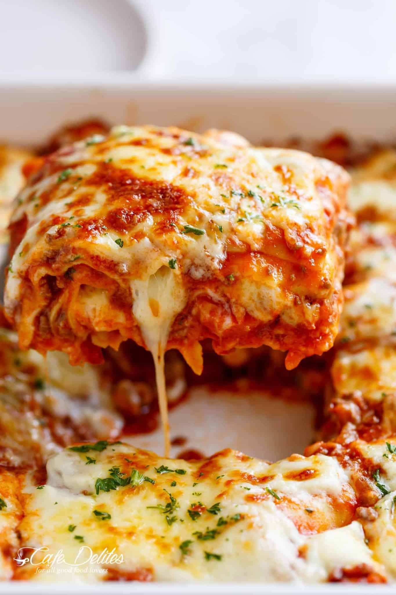

Lasagna

Ingredients
Meat Sauce:
- 1 tablespoon olive oil
- 1 onion, finely chopped
- 1 carrot, finely diced
- 4 cloves garlic cloves, minced
- 24 ounces (700 grams) ground beef mince
- 10 ounces (300 grams) ground pork mince, or beef
- 24 ounces (700 grams) Passata
- 14 ounces (410 grams) crushed tomatoes
- 3 heaped tablespoons tomato paste, (I use garlic and herbs flavoured)
- 2 beef or vegetable bouillon cubes, crushed
- 1 teaspoon each dried oregano and basil
- 1/2 teaspoon sugar, (if desired)
- Salt and pepper, season to your tastes
White Sauce (Béchamel):
4 tablespoons butter
- 1/4 cup flour, all purpose or plain
- 3 1/2 cups milk
- 1 cup fresh shredded parmesan
Lasagna:
- 13 ounces (375 grams) fresh lasagna sheets*
- 17 ounces (500 grams) fresh mozzarella cheese, shredded
- 2 tablespoons finely chopped fresh parsley
Instructions
Meat Sauce:
- Heat oil in a large pot over medium heat, then add in the onion and carrots and cook for 8-10 minutes, or until softened.
- Add in the garlic and sauté for about 1 minute, until fragrant.
- Add beef and pork (if using) and cook while breaking it up with the end of your spoon, until browned.
- Pour in the Passata, crushed tomatoes, tomato paste, crushed bouillon and dried herbs. Mix well to combine and bring to a gentle simmer.
- Season with desired amount of salt and pepper (I use about 3/4 teaspoon each) and sugar if needed. Cover and cook for about 20-30 minutes, occasionally mixing, until the sauce has thickened slightly and meat is tender.
- Adjust salt, pepper and dried herbs to your taste.
Parmesan White Sauce:
- In a large pot, melt butter over medium heat. Remove from hot plate; add the flour and whisk for about 30 seconds, or until well blended.
- Place pot back onto stove, reduce heat down to low and slowly whisk in 1 cup of the milk until well combined.
- Once well blended, add the remaining milk in 1 cup increments, mixing well after each addition, until all the milk is used and sauce is free from lumps. If the sauce is too thick, add a little more milk until it turns into a nice and creamy consistency.
- Increase heat to medium and continue cooking sauce while stirring occasionally until it thickens (about 6-7 minutes) and coats the back of your wooden spoon.
- Add in the parmesan cheese and remove from heat. Season with salt and pepper and mix until the cheese is melted through.
To Assemble:
- Preheat oven to 350°F | 180°F.
- Spoon about 1 cup of meat sauce on the base of a 9x13-inch baking dish, then cover with lasagna sheets. (Trim sheets to fit over the meat if needed.) Layer with 2 cups of meat sauce (or enough to cover pasta), 1 cup of white sauce and half of the mozzarella cheese.
- Repeat layers (leaving the remaining cheese for the top).
- Pour the remaining meat sauce and white sauce over the last layer of lasagna sheets and top with the remaining mozzarella cheese.
- Bake for 25 minutes or until golden and bubbling.
- Garnish with parsley and let stand for about 10 minutes before slicing and serving.
ENJOY!
Notes
- *Fresh lasagna pasta sheets are found in the refrigerator section of most grocery stores. We prefer fresh pasta in our lasagna, but if you can't find or don't have access to fresh, you can use dried.
No Cook or Instant Noodles can be used without pre-boiling (check the packet instructions first). You can assemble as normal. To ensure the pasta has enough liquid to cook through while the lasagna is baking, we normally add about 1/2 cup of water to our sauce when using INSTANT.
Pre Boil Or Pre Cook Pasta Sheets need to be boiled first before assembly. Follow the instructions on the packet. Add a couple of tablespoons of olive oil into the water to prevent the sheets from sticking together, and stir them occasionally with a wooden spoon. Transfer each cooked lasagna sheet carefully into a large bowl or pot filled with cool water to help stop the cooking process. Leave them in there until ready to use. This helps prevent them from sticking together or drying out.
Nutrition
Calories: 613kcal | Carbohydrates: 39g | Protein: 38g | Fat: 31g | Saturated Fat: 15g | Cholesterol: 133mg | Sodium: 832mg | Potassium: 918mg | Fiber: 2g | Sugar: 9g | Vitamin A: 1845IU | Vitamin C: 11.6mg | Calcium: 507mg | Iron: 5.7mg